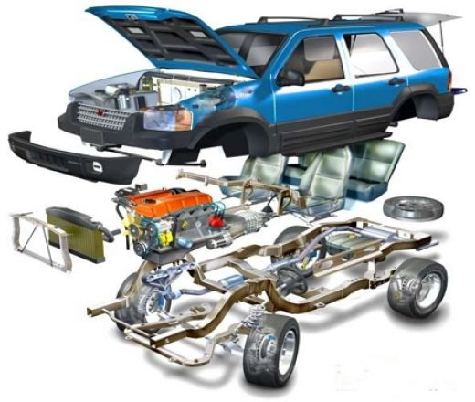
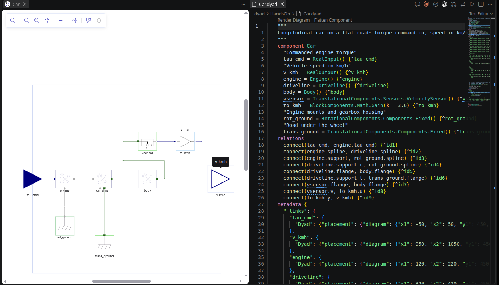
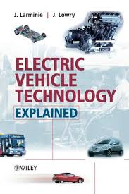
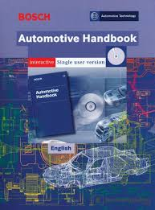
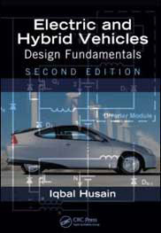
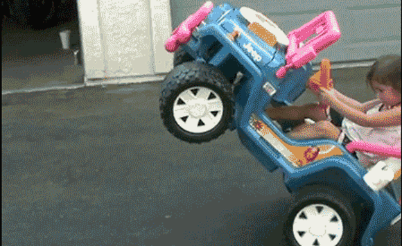

Vehicle Systems & Components
Ing. Dmitry Rozhdestvenskiy, Ph.D.
S speaker view · C cue panel · O overview · ← → sections · ↑ ↓ within a section
In a sentence each, as we go round:
Attendance is not compulsory. But active attendance and participation — questions, answers, work in the practicals — earn points that count toward the exam.
The course gives you a working knowledge of:

All modeling in this course is done in Dyad, by JuliaHub: you draw or write a model of a physical system, and it simulates it. Together we build one library of vehicle components and test different vehicle systems on it.
Focus: the car's 1D (longitudinal) motion.
engine · electric motor · wheels · transmission · brakes · driver
ABS, ESP and TCS · electric drive and its control · hybrid architecture · adaptive cruise control

Documentation: help.juliahub.com/dyad/dev
First practical: build the car in Dyad.
| # | Lecture | Practical |
|---|---|---|
| 1 | Introduction | |
| 2 | PID controllers and vehicle dynamics | |
| 3 | Introduction to Dyad: build the car | |
| 4 | Internal combustion engines | |
| 5 | Engine modeling | |
| 6 | Hybrid and electric vehicles | |
| 7 | An electric motor and its control | |
| 8 | Developing the hybrid architecture | |
| 9 | Fuel cells | |
| 10 | Active and passive safety systems | |
| 11 | Simulation of ABS, ESP and TCS | |
| 12 | Driver comfort and assistance systems | |
| 13 | In-class work on the assignment | |
| 14 | Autonomous vehicles | Camera and sensors in the CARLA simulator |
| First exam date |
| Tool | What it is for | Get it |
|---|---|---|
| Visual Studio Code | the editor every practical runs in | code.visualstudio.com/download |
| Dyad Studio extension | models and simulation; installs Julia with it | VS Code → Extensions → search Dyad, or the
Marketplace |
| JuliaHub account | sign-in that unlocks Dyad's libraries | juliahub.com |
| Git | version control for your work | git-scm.com/downloads |
| GitHub account | hosts your repository; you hand in through it | github.com/signup |
Once, in a terminal, with the same email as on GitHub:
git config --global user.name "Jana Novakova"
git config --global user.email "jana@example.com"
In VS Code, click the Accounts icon (bottom left) → Sign in with GitHub, so it can push for you.
main is the accepted
version; you work on your own branch.| Step | Command | In VS Code |
|---|---|---|
| Get your repository (once) | git clone <url> |
Ctrl+Shift+P → Git: Clone |
| Start a task on its own branch | git switch -c task-1 |
branch name in the status bar → Create new branch |
| Save progress, often | git add dyad/Car.dyadgit commit -m "Add the car body" |
Source Control panel: + to stage, message, Commit |
| Upload | git push |
Publish Branch / Sync Changes |
| Hand in | on GitHub: Compare & pull request → describe what you did → Create pull request | |
A pull request asks for your branch to be merged into
main. It is where your work is reviewed and commented on.



